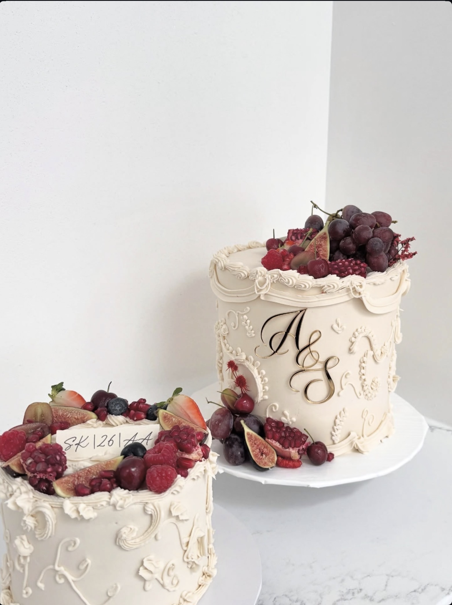

A short, honest explanation of the cookies this website uses.
Last updated: June 2026
This Cookies Policy explains what cookies are, how they may be used on the Artisan Cakery website, and how you can manage them. It should be read alongside our Privacy Policy.
Cookies are small text files that a website can place on your device when you visit. They are widely used to make websites work properly, to remember your preferences, and to give the website owner information about how the site is used. Cookies cannot harm your device and do not contain any personal information such as your address.
Artisan Cakery is a simple brochure website. We keep cookies to a minimum and we do not use cookies to track you across other websites or to build advertising profiles.
These are needed for the website and its enquiry form to function correctly and securely. They are set by our website host and cannot be switched off without affecting how the site works.
We use Google Fonts to display the typefaces you see on this site. When a page loads, your browser requests these fonts from Google, which may involve your device's IP address. We do not control any cookies that Google may set through this service — you can read more in Google's Privacy Policy.
If you click through to our Instagram page, Instagram (Meta) may set its own cookies. These are governed by Instagram's own cookie and privacy policies, not ours.
You are in control of cookies. Most web browsers let you view, block or delete the cookies stored on your device through their settings menu. Please note that if you block essential cookies, some parts of this website — such as the enquiry form — may not work properly.
To find out how to manage cookies on the most popular browsers, visit aboutcookies.org.
We may update this Cookies Policy from time to time. Any changes will be posted on this page with a revised "last updated" date.
If you have any questions about how we use cookies, please contact us:
Phone / WhatsApp: 07751 507685
Instagram: @artisancakeryy